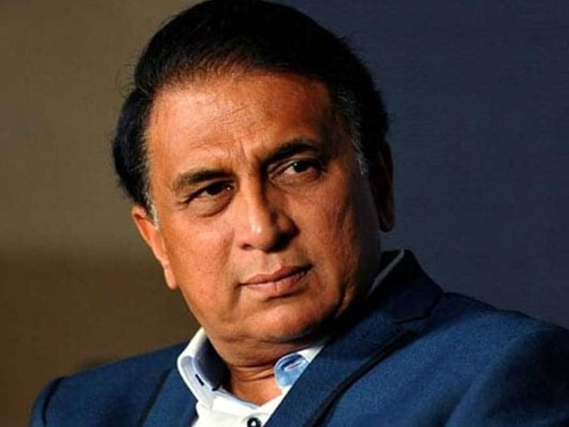

Sunil Manohar Gavaskar born 10 July 1949 , is a former captain of the Indian national cricket team who represented India and Bombay from 1971 to 1987.[2] Gavaskar is acknowledged as one of the greatest opening batsmen of all time.
Gavaskar was widely admired for his technique against fast bowling, with a particularly high average of 65.45 against the West Indies, who possessed a four-pronged fast bowling attack, widely regarded as the most vicious in Test history. However, most of Gavaskar's centuries against West Indies were against the team when their four-pronged attack were not playing together. His captaincy of the Indian team, was considered as one of the first attacking ones, with Indian team winning the 1984 Asia Cup, and the World Championship of Cricket in 1985. At the same time, there were multiple exchanges of captaincy between Gavaskar and Kapil Dev, with one coming just six months before Kapil led India to victory at the 1983 Cricket World Cup. He is also a former Sheriff of Mumbai. wikipedia